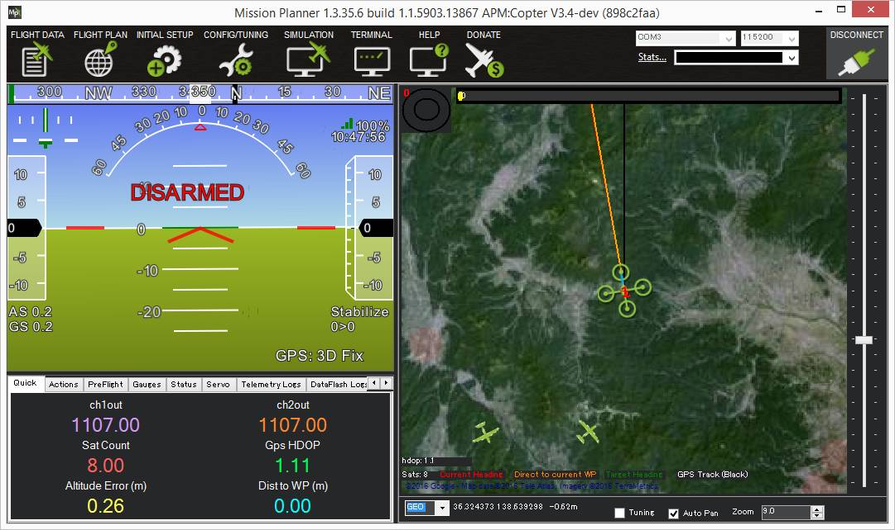

[copywiki destination=”plane,copter”]
ADS-B¶
This article describes how to attach and configure an ADS-B module so that your aircraft can be aware of, and/or transmit to, other aircraft and air-traffic control nearby. This also allows the pilot on the ground to be aware of nearby manned aircraft and optionally to allow the vehicle to automatically avoid them.
ADS-B (aka Automatic Dependent Surveillance Broadcast) is an air traffic surveillance technology that enables aircraft to be accurately tracked by air traffic controllers and other pilots without the need for conventional radar.
Warning
The avoidance features are new features still under development and should be used with caution. It is highly recommended that the RCx_OPTION =38 (ADSB Avoidance En) feature be setup if ADSB avoidance is enabled to allow easy disabling while airborne, if so desired.
Required Hardware¶
The sensors can be purchased directly from uAvionix or Sagetech or from the following distributors:
U.K.: Unmanned Tech
Germany: UAV Store
Connecting to the autopilot¶
{kind=link}
The ADSB receivers should be connected to an autopilot’s serial port. The receiver should be mounted so that the antenna is oriented vertically.
Setup¶
Set the ADSB_TYPE parameter to match the receiver’s serial communication protocol.
The serial port to which the receiver is connected should be configured to also match the ADSB receiver’s protocol:
ADSB Protocol |
|
|
|
|---|---|---|---|
MAVLINK |
1 |
MAVLink2 (2) |
57600 |
Sagetech |
2 |
ADSB (35) |
|
UCP |
3 |
115200 |
|
Sagetech MX |
4 |
For example, if you plugged a uAvionix Ping2020i into a UART designated as SERIAL4 on the autopilot, you would set:
SERIAL4_PROTOCOL to 2 (meaning MAVLink2)
SERIAL4_BAUD 57 (meaning 57600)
Note
the specifications for the ADSB receiver may only state MAVLink as the protocol. In that case try MAVLink2, first, and if that does not succeed, use MAVLink as the serial port protocol.
You will need to reboot your board after making those changes.
To enable streaming the ADSB data to the GCS you’ll want to check your StreamRate param. In some cases it is already set but it’s good to check. These rates are adjustable per telemetry like in the case of having both a high-bandwidth and a low-bandwitdh link attached. The param to adjust the rate would depend on which one your GCS is connected to. In most cases, it is telem1.
SR1_ADSB 5 (meaning 5Hz)
Once operational aircraft within about 50km should appear on the ground station map.
{kind=link}
To test the system you can compare with flights shown on flightradar24.com.
ADSB-out configuration¶
Warning
Ensure you have the correct permissions to be using ADSB hardware that is capable of transmitting. You will be showing up on air-traffic controller airport radar!
The following parameters are used to configure ADS-B out:
ADSB_ICAO_ID: ICAO_ID unique vehicle identification number of this aircraft. This is a integer limited to 24bits. If set to 0 then one will be randomly generated. If set to -1 then static information is not sent, transceiver is assumed pre-programmed.
ADSB_EMIT_TYPE: ADSB classification for the type of vehicle emitting the transponder signal. Default value is 14 (UAV).
ADSB_LEN_WIDTH: Aircraft length and width dimension options in Length and Width in meters. In most cases, use a value of 1 for smallest size.
ADSB_OFFSET_LAT: GPS antenna lateral offset. This describes the physical location offset from center of the GPS antenna on the aircraft.
ADSB_OFFSET_LON: GPS antenna longitudinal offset. This is usually set to 1, Applied By Sensor
ADSB_RF_SELECT: Transceiver RF selection for Rx enable and/or Tx enable. This only effects devices that can Tx and/or Rx. Rx-only devices override this to always be Rx-only.
ADSB_SQUAWK: Squawk/Transponder (Mode 3/A) code that is broadcasted to ATC that is usually assigned by your ATC for a given flight. In the USA/Canada the default squawk code is for VFR which is 1200. Most parts of Europe and Australia use 7000. If an invalid octal number is set then it will be reset to 1200.
ADSB_OPTIONS: Allows enabling certain device specific capabilities and to allow “Squawking” emergency codes on certain vehicle failsafes.
In many cases the defaults are OK and you don’t need to change any of these except ADSB_RF_SELECT which is needed to turn on the transmitter. The ADSB_RF_SELECT transmit bit is cleared on boot to ensure you’re only trsnamitting when intentionally enabled.
There are additional MAVLink messages for ADSB in uavionix.xml to allow a GCS to set all of these options. Namely, msg UAVIONIX_ADSB_OUT_CFG and UAVIONIX_ADSB_OUT_DYNAMIC where the _cfg is the only place where you can assign a custom callsign.
Note
Mission Planner’s transponder tab will not send correct messages to Sagetech’s XP series transponders. In order to change operating mode, Sagetech’s Engineering GUI can be used to set the transponder to ALT mode to ensure transmission is working with the flight controller.
Enabling Manned Vehicle Avoidance¶
ArduPilot includes a flight mode, AVOID_ADSB, that attempts to avoid manned vehicles based on the ADS-B sensor’s output. Entry into this mode is automatic when avoidance is necessary based on the parameters below. Exit is also automatic when the threat has passed.
To enable this feature connect with a Ground Station and set the following parameters:
AVD_ENABLE: set to “1” to enable ADS-B based avoidance (param refresh may be necessary after setting this)
AVD_F_DIST_XY: the horizontal distance in meters that should be considered a near-miss
AVD_F_DIST_Z: the vertical distance in meters above or below the vehicle that should be considered a near-miss
AVD_F_TIME: how many seconds in advance of a projected near-miss (based on the vehicle’s current position and velocity) the vehicle should begin the
AVD_F_ACTION.AVD_F_ACTION: controls how the vehicle should respond to a projected near-miss (i.e. 2:Climb Or Descend, 3:Move Horizontally, 4:Move Perpendicularly in 3D, 5:RTL or 6:Hover)
AVD_F_RCVRY: sets how the vehicle will behave after the vehicle has cleared the near-miss area (i.e. 1 = resume previous flight mode)
Note: there are equivalent “Warn” parameters (i.e. AVD_W_DIST_XY) that can be used to adjust when warnings to the pilot will appear on the ground station.
In ArduPilot firmware versions 4.0 and later, the entry into this mode can be enabled or disabled via an RC channel switch by setting the channel’s RCx_OPTION = 38 (ADSB Avoidance En). If the RC PWM is >1800us, then entry into this mode is enabled if a threat presents.
Vehicle Database¶
When enabled, the ADS-B library will store information for up to 50 vehicles detected by the ADS-B receiver but can be further limited using the ADSB_LIST_MAX parameter. Due to some experimental work in other features, such as EKF2, available RAM may be limited. It is important to note that when ADS-B is disabled (ADSB_TYPE = 0) then the memory is released, effectively freeing up about 1KB of RAM. When enabled, the detected vehicle list is checked once per second for potential conflicts.
Developer information including Simulation¶
The data is transmitted via the ADSB_VEHICLE message. When
received by ArduPilot, it is streamed out using the SRx_ADSB value where x is the telemetry port number and the
value is how many vehicles per second to be streamed. If using telem1 the streamrate param would be SR1_ADSB. The list will not repeat any faster than 1 second. This
flexibility is useful to conserve bandwidth on data links but also allow maximum update rate for high-speed links
such as an on-board companion computer.
ArduPilot’s SITL includes the simulation of ADS-B enabled aircraft. To enable this you must have pymavlink v1.1.70 or greater. If you have an older version, use:
sudo pip install --upgrade pymavlink MAVProxy
Set the number of aircraft to simulate using the SIM_ADSB_COUNT parameter. Ping2020 simulation support
can be enabled by setting parameter ‘SIM_ADSB_TX`. Other simulation options for ADS-B are present, all
starting with SIM_ADSB_.
Plugging in a hardware ADS-B receiver to your computer using a USB-to-Serial converter, or using the PingUSB, will allow you to overlay real ADS-B traffic into the simulation. You might invoke SITL in this way to achieve this effect:
sim_vehicle.py -v ArduCopter -A "--uartC uart:$SERIAL_DEVICE:57600"
Where SERIAL_DEVICE might be /dev/serial/by-id/usb-FTDI_FT232R_USB_UART_A4008ZND-if00-port0 on a Linux system (find a list of valid serial devices with the command ls /dev/serial/by-id/* or ls /dev/ttyS* for a COM port on Cygwin). Once SITL has started it may be necessary to set the SERIAL3_ parameters:
:ref:`SERIAL3_PROTOCOL<SERIAL3_PROTOCOL>` 1
:ref:`SERIAL3_BAUD<SERIAL3_BAUD>` 57600